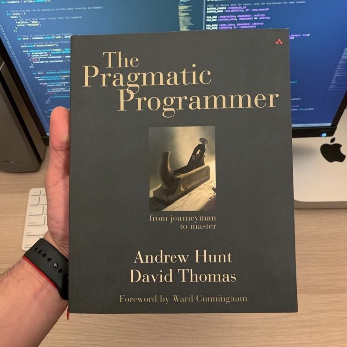

Nəticə :
Bilik portfolionuz

Proqramlaşdirma sahəsində bilik və təcrübə istifadə müddəti çox tez bitən məfhumdur.
Bu gün əldə etdiyiniz bilik bir neçə il sonra istifadəyə yararsiz hala gələbilər.
Buna görə də sizin bir vəzifəniz də öz bilik portfolionuzu daimi yeniləmək olmalidir.Bunun
üçün kitabda verilən tövsiyələr
- Hər il yeni bir proqramlaşdirma dil öyrənin. Xüsusən də hal hazirda istifadə etdiyiniz dildən
struktur və yanaşma olaraq fərqli olan dili
- Texniki kitab oxumaq alişqanliği yaradin özünüzdə. Dilin ya da texnologiyanin dakumentasiyasi oxumaqla
hər hansi təcrübəli birinin analizindən keçirilmiş fikirləri oxumaq sizə müsbət şeylər qatacaq
- Texniki olmayan kitablar oxuyun.Proqramçi insandir.Sizin həyata baxişinizdir sizin ən
böyük motivasiya qaynağiniz. Bu qədər yükü qaldira bilməyiniz üçün sizə lazim olan motivasiya
və baxiş tərzini texniki olmayan kitablardan ala bilərsiniz.
- Dərslərdə iştirak etmə alişqanliğiniz olsun. Universitet ya da başqa şəkildə öyrənən kütlənin daxilində olmaq
sizin xəbəriniz olmadan sizi daimi öyrənmə sisteminə düşməyinizə kömək edəcək
- Sahə ilə əlaqədar fərqli mühitlərdə olmağa çalişin. İnsanlarin proqramlaşdirmaya və kod problemlərinə
yanaşma tərzləri sizin sürətinizi və analiz qabiliyyətinizi artira bilər
- İstifadə etdiyiniz kod mühiti müəyyən periodlarla dəyişin. Windows istifadə edirsinizsə bir müddət
Linux-a keçmək sizdə fərqli qabiliyyətlərin ortaya çixmasina səbəb ola bilər
- Yenilikləri izləyə biləcəyiniz bir kanaliniz olsun. Bəzən yeni çixan texnologiyalari hamidan
əvvəl öyrənmək sizi bir addim qabağa çixara bilər. Buna görə “gözü açiq olun” yeni texnologiyalar barəsində